Your smart coach — an AI-powered fitness app that adapts workouts and meals to your energy, goals and progress.
Flexora was designed by the UX/UI design team at UXAWY. It delivers a seamless, intuitive fitness experience: a clean interface and smart features focused on usability, accessibility and real value in people's daily lives.
We used a user-centred design thinking process to understand why people quit fitness apps, define the core problem, and create a simple, personalized experience powered by AI.
“I tried a workout plan before, but I stopped because no one followed up with me.”
Interviewee · empathy map
“I'm not sure if I'm doing the exercises correctly.”
Interviewee · empathy map
“I'd like a smart coach that adapts to my time, mood, and progress.”
Interviewee · empathy map
Omar wants to stay fit but often feels too busy with classes and assignments. He follows short, effective workouts on his phone between lectures or in the evening, and likes apps that are easy to navigate, show exercises clearly and offer plans that match his goals.
Choose a coach, ask anything about exercises, meals or progress, and get answers in chat.
A clear home screen with today's plan, programs by level and a live exercise player.
Daily and weekly meal plans with calories, carbs, protein and fats.
Weight, weekly hours and program completion in one place.


33 boards · research, flows, design system and all screens
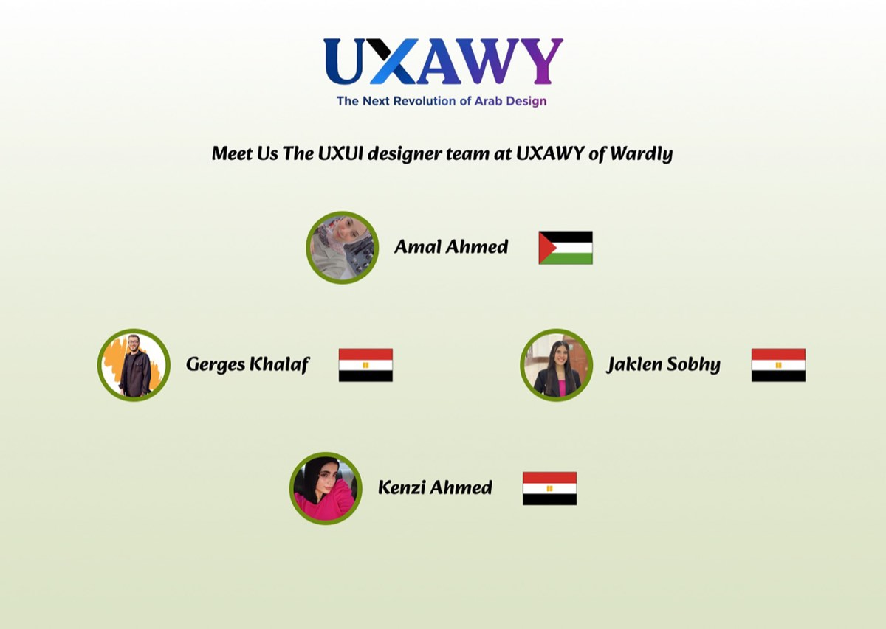

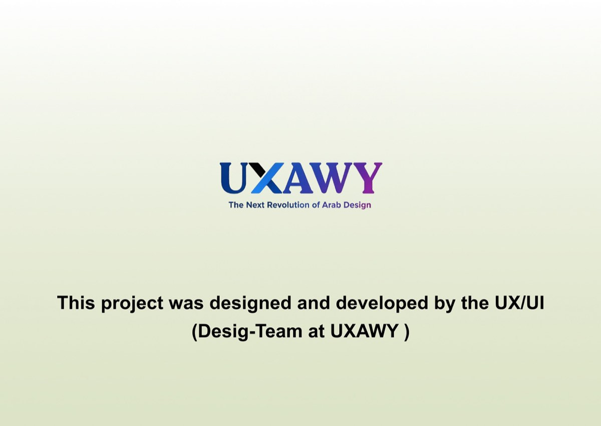
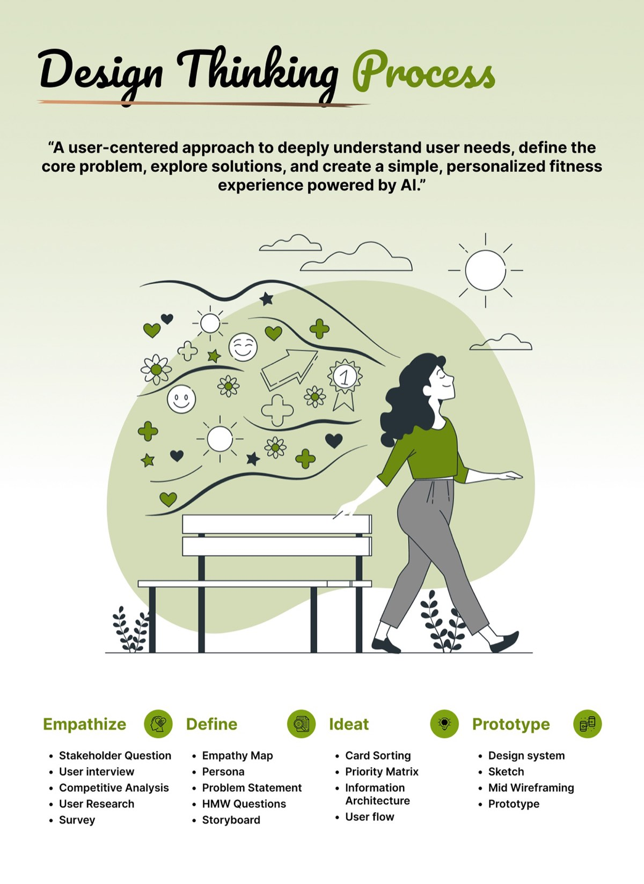


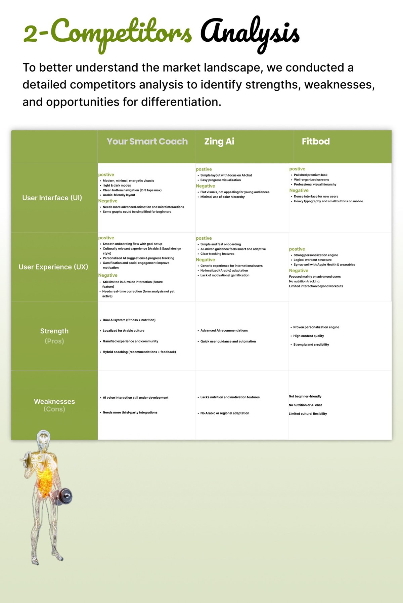

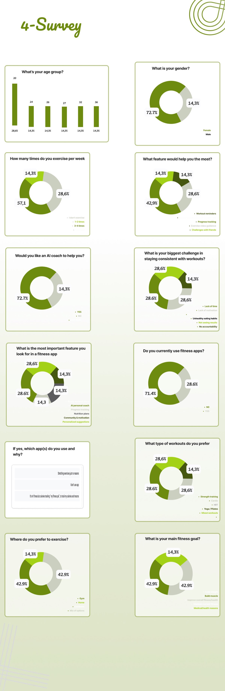
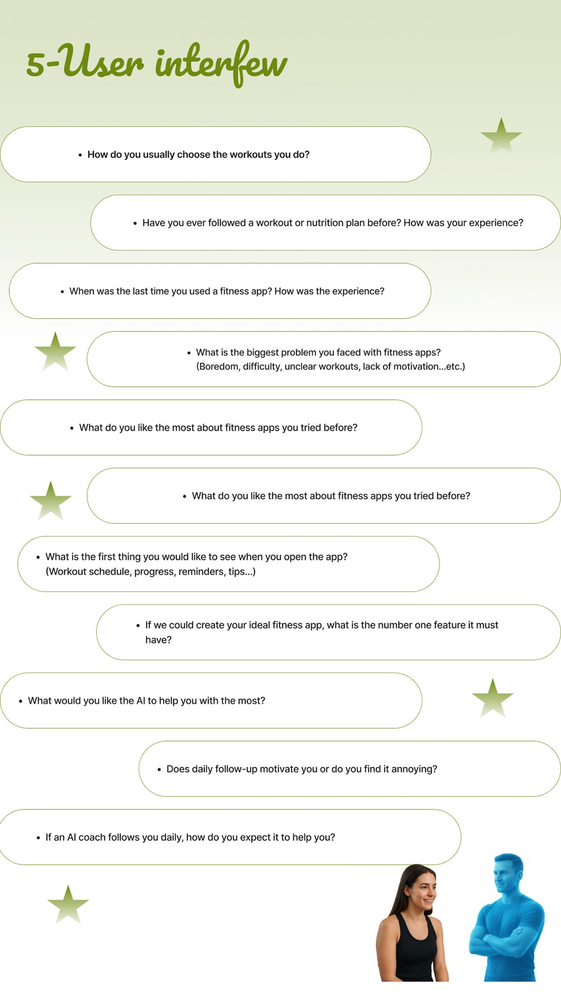


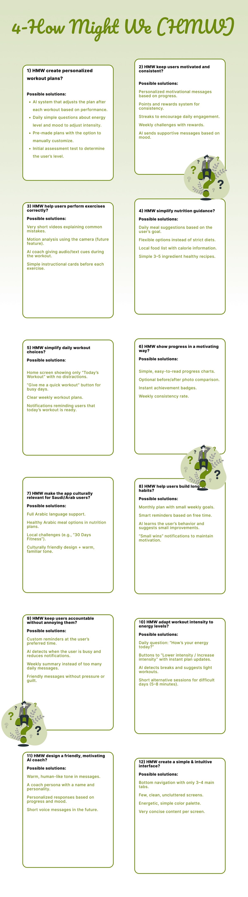

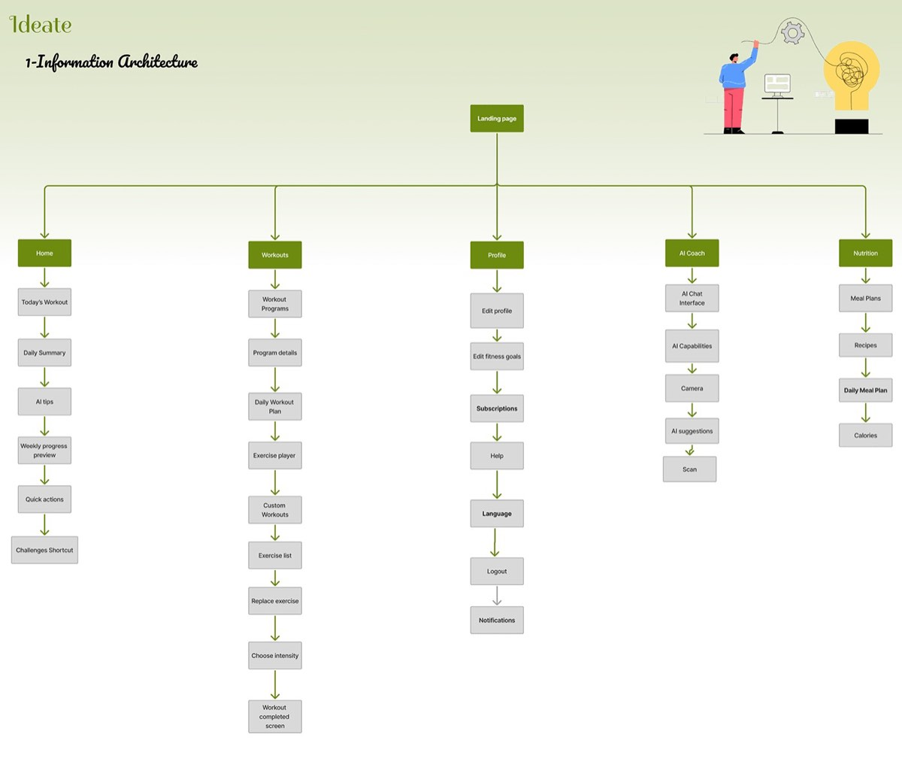
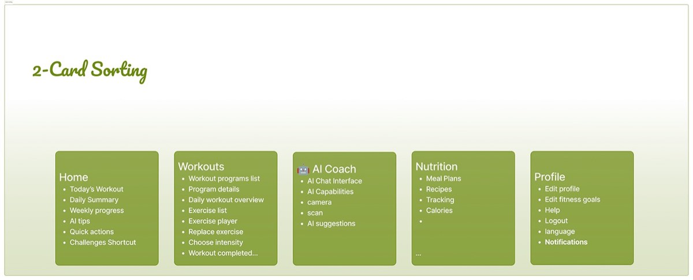
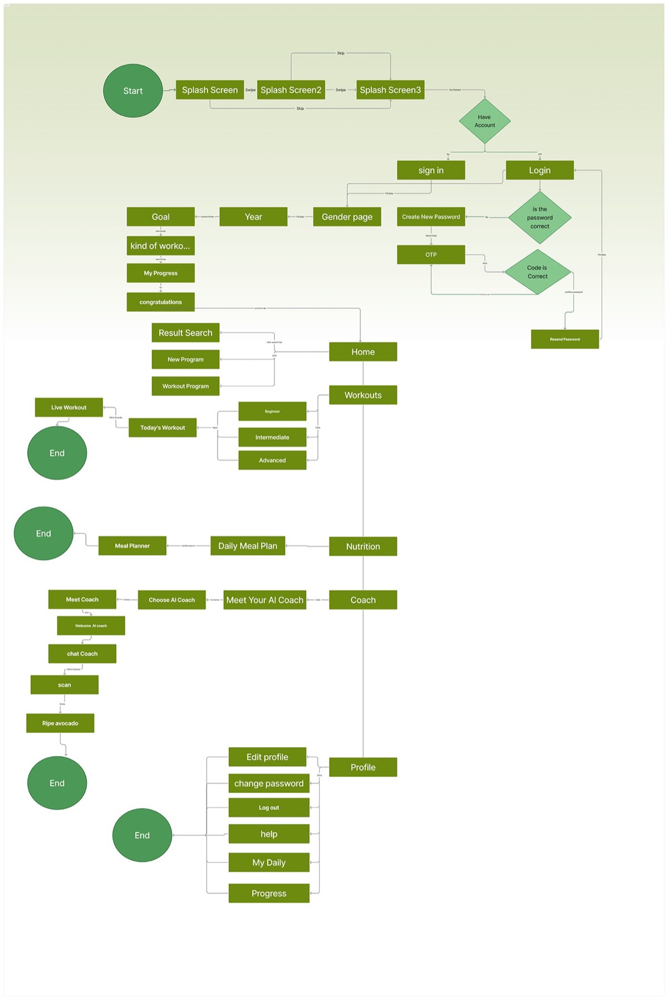

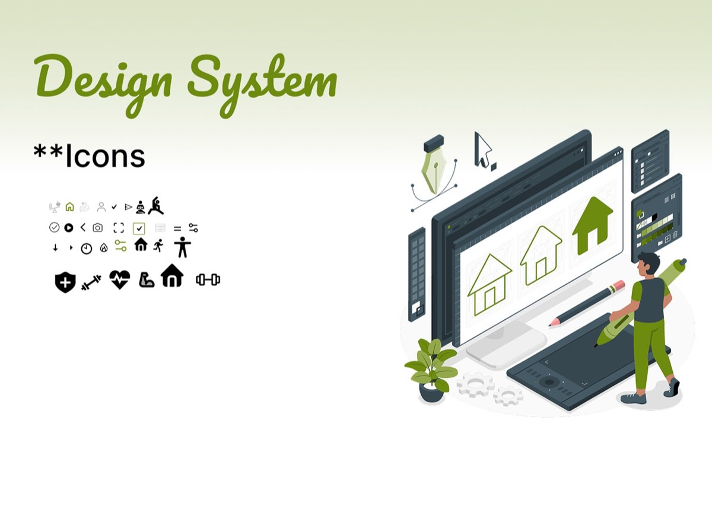
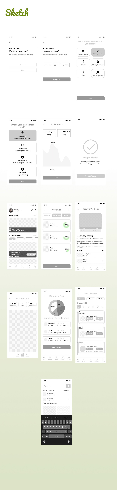
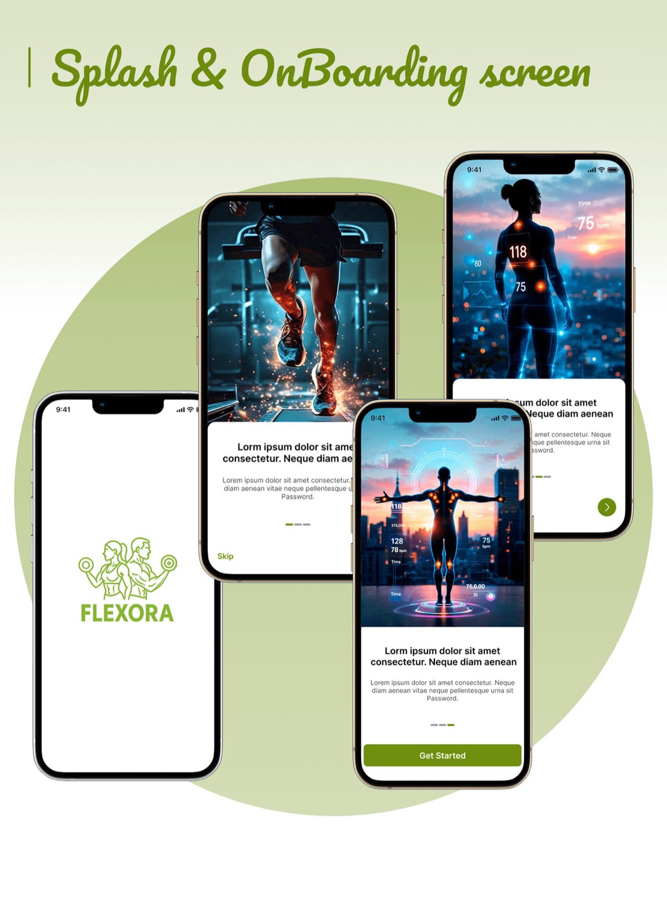

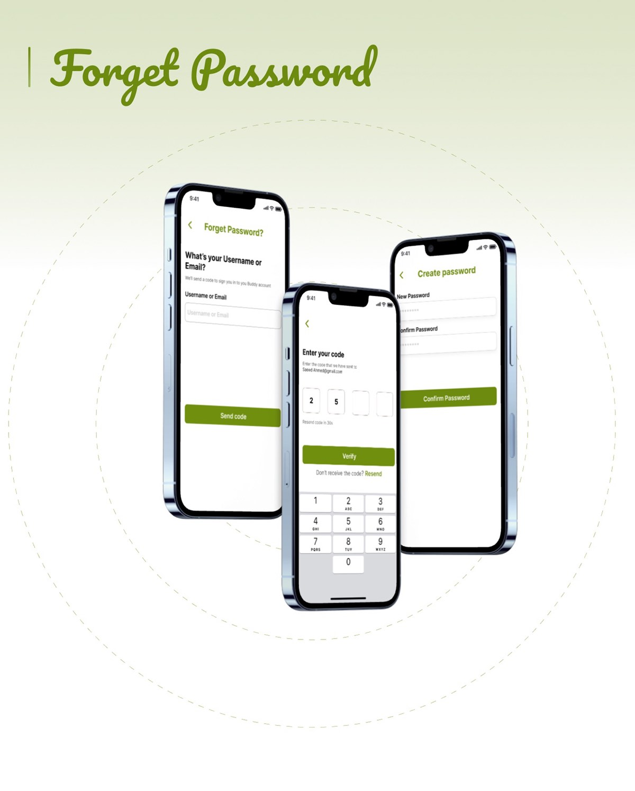

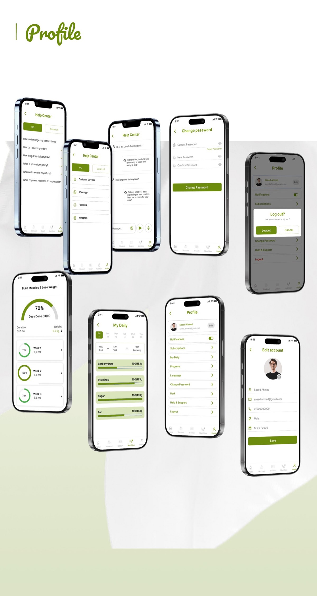